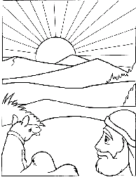

This week's lessons: Genesis 12:1-4a , Psalm 121 , Romans 4:1-5, 13-17 , John 3:1-17 or Matthew 17:1-9
This
week's lessons: Genesis
12:1-4a , Psalm
121 , Romans
4:1-5, 13-17 , John
3:1-17 or Matthew
17:1-9
Elementary School Pew-work
1.
Who was Nicodemus?
_____________________________________________________________
2.
What are some things we know are happening, but we cannot see?
_____________________________________________________________
3.
What are things of the Spirit we know, but we cannot see?
_____________________________________________________________
Questions taken from Lessons for Small Congregations: http://www.episcopalchurch.org
Next
week's lessons: Exodus
17:1-7, Psalm
95, Romans
5:1-11, John
4:5-42
This
week's lessons: Genesis
12:1-4a
, Psalm
121
, Romans
4:1-5, 13-17
, John
3:1-17
or Matthew
17:1-9
Middle-School Pew-work
Becoming an adult
is a journey into maturity, much like Abraham's journey to maturity
of faith. If you could hear God calling you to that journey, what
would God be
saying?___________________________________
_______________________________________________________________________________________
_______________________________________________________________________________________
_______________________________________________________________________________________
_______________________________________________________________________________________
_______________________________________________________________________________________
_______________________________________________________________________________________
_______________________________________________________________________________________
Any time you
journey toward something, you journey away from something else. What
is God calling you to journey away
from?_______________________________________________________________________
_______________________________________________________________________________________
_______________________________________________________________________________________
_______________________________________________________________________________________
_______________________________________________________________________________________
_______________________________________________________________________________________
_______________________________________________________________________________________
 Next
week's lessons: Exodus
17:1-7,
Psalm
95,
Romans
5:1-11,
John
4:5-42
Next
week's lessons: Exodus
17:1-7,
Psalm
95,
Romans
5:1-11,
John
4:5-42